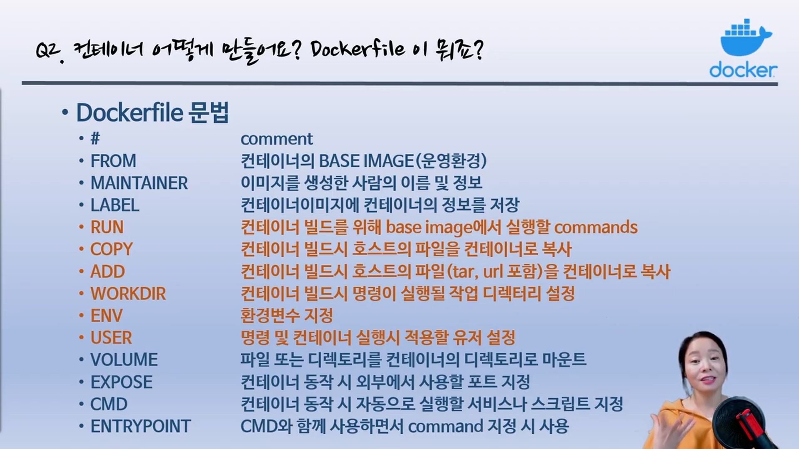

컨테이너 기본 조작
기본 명령어 확인
#hub.docker.com으로부터 컨테이너 이미지 찾기/가져오기
docker search nginx
docker pull nginx:latest
#보유 컨테이너 이미지 확인
docker images
#컨테이너 실행 >> 백그라운드 모드로 web이란 이름으로 컨테이너 nginx 이미지 실행
docker run --name web -d -p 80:80 nginx
#실행중 컨테이너 확인
docker ps
#컨테이너로 실행한 nginx 동작여부 확인
curl localhost:80
#web이란 이름을 가진 컨테이너 중지
docker stop web
#web이란 이름을 가진 컨테이너 삭제
docker rm web
#web이란 이름을 가진 컨테이너 강제 삭제
docker rm -f web
이미지 파일 위치
#다운로드 된 컨테이너 이미지의 물리적인 경로
cd /var/lib/docker/overlay2
ls
컨테이너 실행
- 생성
#컨테이너 생성 docker create [옵션] <이미지이름:태그명>
docker create --name webserver -p 80:80 nginx:1.14
- 실행
#컨테이너 실행 docker start [옵션] 컨테이너이름
docker start webserver
- 생성&실행
#컨테이너 생성/실행 docker run [옵션] <이미지이름:태그명>
docker run --name webserver -d -p 80:80 nginx:1.14💡
pull > create > start를 묶은 명령어가 run 명령어 이다
- 실행 중 컨테이너 목록
#docker ps [옵션]
docker ps
- 컨테이너 중지 및 삭제
#중지
docker stop webserver
#삭제
docker rm webserver
#실행 중 컨테이너 삭제
docker rm -f webserver
- 컨테이너 이미지
#이미지 조회
docker images
#이미지 삭제
docker rmi webserver
- 컨테이너 연결하기
#동작중인 컨테이너에 NEW 명령어 추가 실행 docker exec [옵션] 컨테이너이름
docker exec -it webserver /bin/bash
- 기타
# 컨테이너 조사
docker inspect webserver
#컨테이너에서 동작되는 프로세스 확인 docker top [옵션] 컨테이너 이름
docker top webserver
#동작중인 컨테이너가 생성한 로그 보기 docker logs [옵션] 컨테이너이름
docker logs -f webserver
dockerfile을 이용한 생성
{kind=link}

출처 : 유튜브 따배런 따배도 https://www.youtube.com/@ttabae-learn
nodejs에서 돌아가는 간단한 hello.js 파일 작성하여 컨테이너 실행
- 디렉토리 생성 및 진입
mkdir hellojs
cd hellojs
- hello.js 작성
cat > hello.js
const http = require('http');
const os = require('os');
console.log("Test server starting...");
var handler = function(request, response){
console.log("Received request from " + request.connection.remoteAddress);
response.writeHead(200);
response.end("Container Hostname: " + os.hostname() + "\n");
};
- dockerfile 작성
FROM node:12
COPY hello.js /
CMD ["node", "/hello.js"]
- 컨테이너 빌드
docker build -t hellojs:latest .
- 빌드 된 컨테이너 실행
docker run -d -p 80:8080 --name web hellojs
- 테스트
curl localhost:80